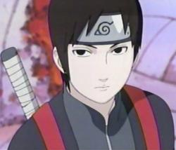

Angelic Layer
 De: La Frikipedia, la enciclopedia extremadamente seria.
De: La Frikipedia, la enciclopedia extremadamente seria.
| De la serie anime para todos:
|
| Angelic Layer
|
|
|
| Tamayo y Kotaro al leer este articulo
|
|
| Género:
|
Yuri
|
| Episodios:
|
26
|
| Autor del manga:
|
las drogadas de CLAMP
|
| Publicación:
|
2001
|
| Publicado en:
|
CLAMP??
|
| Director del anime:
|
CLAMP
|
| Transmitido en:
|
la tele y en algún fansub
|
| Ovas:
|
Ninguna
|
| Películas:
|
Ninguna...buuuuuuu
|
| Notas
|
Años despues de esta serie se creó Chobits
|
«¡Hikaruuuuu!»
~ Misaki cada vez que pierde una pelea
«Hikaru...Mamá....Ohjiro-san...»
~ Misaki hablando sobre su papel en la serie
«Chii?»
~ Chii saltando al pasado
Angelic Layer es un anime creado por CLAMP. Es el predecesor de Chobits.
Historia

Misaki, la enana protagonista lesbiana a medias de la serie
Icchan Mihara no solo fue el creador de las Chobits, sino que es pariente de Jiraiya, solo mirenlo
Wizard violando a Hikaru en una pelea
 No!!este Sai no!!! Dije Sai Jonouchi
Ohjiro es descendiente de Sasuke Uchiha
Tamayo tiene una hermana perdida en
Fruits Basket, es Kagura Sohma
Misaki Suzuhara es una niña que va desde Wakayama a Tokyo a buscar a su madre (Ah claro..Otra fanática de Marco...). Conoce el Angelic Layer que es una especie de juego con muñecos que se pueden mover con la mente. Ahí conoce a un descendiente de Jiraiya llamado Icchan quien la viola y le enseña a usar un Angel de esos. Misaki ,excitada, empieza a jugar en este misterioso juego de consoladores...
Ella quiere demostrar que el tamaño no importa hasta que conoce al descendiente de Sasuke Uchiha: Ohjiro Mihara. Misaki crea un ángel llamado Hikaru, una copia barata de Hikaru de Magic Knight Rayearth. Ahi conoce a varios Deus entre ellos una pariente de Pucca, una escuincla y una chica llamada Sai (Que no es el de Hikaru no Go ni de Naruto!!).
Hikaru y Misaki consiguen llegar a las Finales por copionas de ataques al estilo de los otros Angeles e incluso la patada giratoria de Chuck Norris (eso es ser bien copiona).
Personajes
- Misaki Suzuhara: Es una niña de 12 años enana y acomplejada. Su proposito es que Hikaru sea el mejor juguete sexual de todos. Tambien es una lesbiana perdida, le excita Tamayo. Kotaro y Ohjiro quieren tirarsela pero ella no sabe cual de los dos
la tiene peor. Es hija de una orgia entre su madre, Shuuko, y los hermanos Elric. Pues Misaki salió enana como Edward y tambien llorona como Alphonse. Como si no fuera poco quiere follarse a su angel.
- Hikaru: La muñeca
juguete sexual de Misaki. Es pequeña como ella porque Misaki quiere demostrar que el tamaño no importa. Se copia las tecnicas de todo el mundo e incluso las de Chuck Norris.
- Kotaro Kobayashi: Un chico timido amigo de Misaki y Tamayo cuyo unico proposito es tirarse a Misaki. Siempre es violado por Tamayo y es el hermano mayor de Hatoko quien no lo respeta
al igual que todos en esta puta serie.
- Tamayo Kizaki: Lesbiana no declarada que quiere abusar de Misaki y la llama Misakichi para que sea su nombre de pila
esos que tienen las putas. A pesar de ser lesbiana le encanta violar a Kotaro.
- Hatoko Kobayashi: Una esquincla del jardin de niños quien quiere abusar de Misaki. Es muy popular por ser extremadamente loli para los violadores.
- Suzuka: La muñeca
juguete sexual de Hatoko, es muy rapida al hacerlo y por eso todos quieren una como ella.
- Ringo Seto: Una cantante estupida güera cruce de Britney Spears con Paris Hilton. Kotaro tiene sueños eroticos con ella pero al final se decide por Misakichi.
- Langa: La muñeca
juguete sexual de Ringo, es un consolador bailarin.
- Madoka Fujisaki: Una moñuda pariente de Garu y Pucca llamada Arisu.
- Ohjiro Mihara: Un acosador de viejas, quien está enamorado de Shuuko, la madre de Misaki. Es descendiende de Sasuke Uchiha. Conoce a Misaki y quiere violarsela y tiene que decidir entre Madre o Hija. Su hermano es Icchan el loco.
- Kaede Saitou: Una chica adorable que cualquiera se violaría. Sai se la carga siempre y trata a su angel Blanche como si fuera su hija, ya que en una de esas veces en que se la tiraron, ya no pudo tener hijos. Es la hermana muerta de Minoru en Chobits.
- Blanche: La muñeca
juguete sexual de Kaede, es muy rapida porque Kaede se deja llevar diciendo que el consolador lo haga solo...
- Sai Jonouchi: Es una chica fria e inexpresiva lesbiana quien quiere abusar de su amiga Kaede. Tambien quiere violar a Misaki y encontrar el punto debil de Hikaru. No confundir con Sai el de Naruto.
- Shirahime: Es el muñeco
juguete sexual de Sai. Es frio aun cuando está en el acto, lo cual la hace mas interesante.
- Icchan Mihara: Es un viejo pervertido que le gusta acosar a todas las chicas del Angelic Layer. Pero lo que mas quiere es tirarse a Shuuko. Se cree que entrenó con Jiraiya y Shigure Sohma por ser unos pervertidos los 3. Aparece un año despues en Chobits pues creó a Chii y a Freya.
- Masaharu Ogata: Un pobre pendejo asistente de Icchan que todos encantan abusar de el. Hace poco conoció a su clon, Matsuda Touta de Death Note.
- Shuuko Suzuhara: Es la puta madre de Misaki quien la dejó para dedicarse a la prostitucion. Icchan quiere montarsela. Hace años violó a Alphonse Elric y de ahi salió Misaki(canija y llorona).
- Athena: Es el mejor
juguete sexual de todos. Es grande y rapida. Pertenece a Shuuko.
- Shoko Asami: Tia lesbiana no declarada de Misaki. Es reportera y como a los demas gusta abusar de Misaki. Ademas es incestuosa le encanta abusar de su hermana Shuuko.
Trivia
- Misaki es prima de Sakura por ser planas y por los ridiculos peinados
- Tamayo y Hatoko se tiraron a Kotaro por toda la eternidad.
- Ohjiro se casó con la vieja Tsunade
- Madoka y Arisu mataron a Tenten por plagio de peinado
- Misaki peleó en una Pelea de Enanos contra Konata Izumi y Edward Elric.
- Por su parte Sai peleó contra Sai de Naruto y ganó
Autor(es):
- Fordus
- Frikiman
- Naruto hyuga
- Lljosemll
- SakuraMiya
- AllenHiME
- Harry El del Pote
- Generibot
- Chupamelaverga
Frikipedia 2005-2016, Licencia
GFDL 1.2 - Extraído por FrikiLeaks